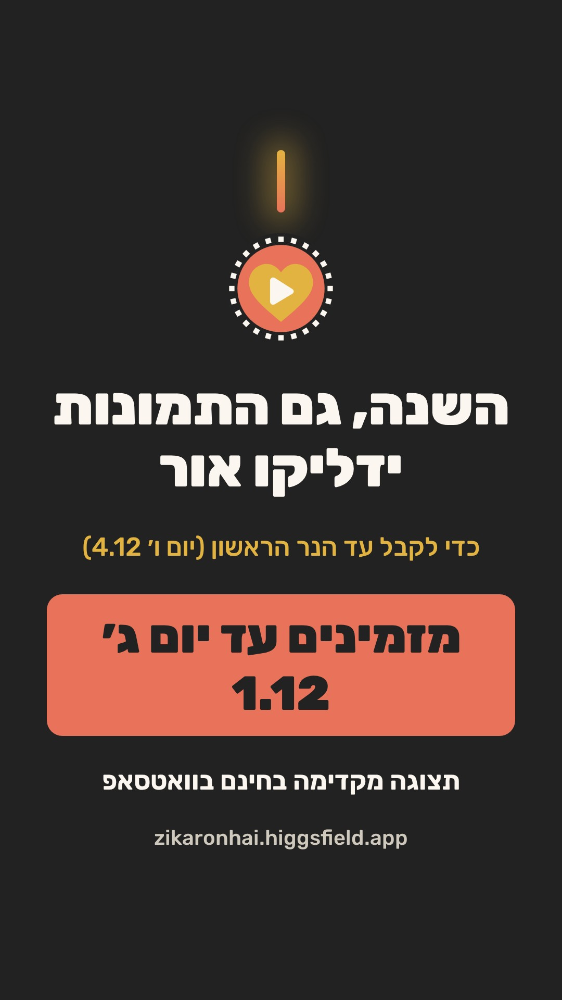
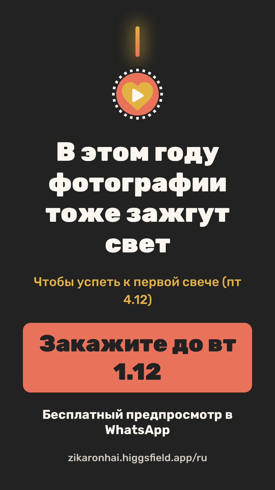
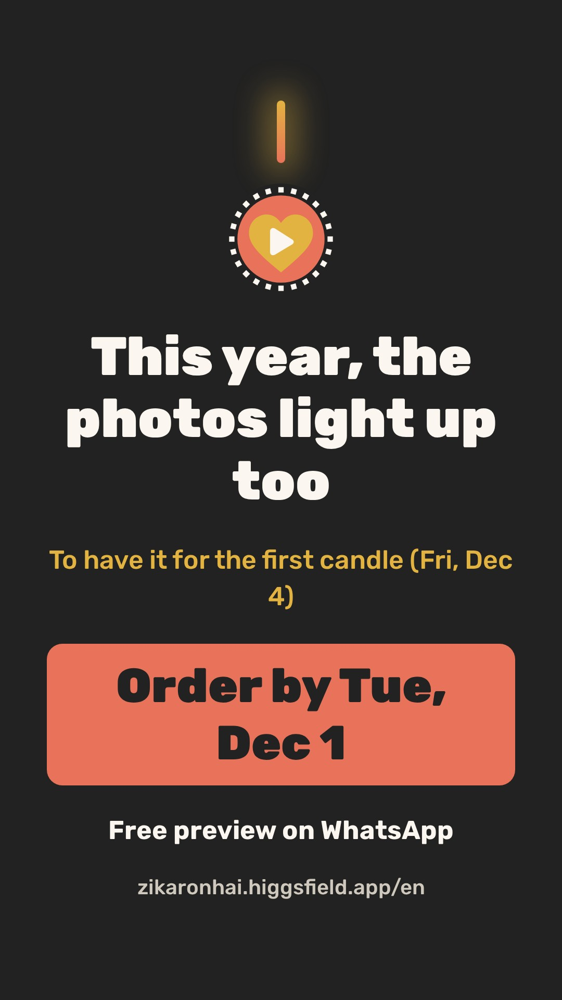

שומרים. חוזרים לפרופיל ← ☰ למעלה ← ״סוג חשבון וכלים״ ← ״מעבר לחשבון מקצועי״.
בוחרים קטגוריה ״צלם״ (Photographer) ← סוג ״עסק״. אפשר לדלג על שאר השלבים.
לוחצים על 🔍 Search ומקלידים תגית עם סולמית, למשל #photorestoration. ברשימה שנפתחת בוחרים את השורה שמתחילה ב-#, או את הלשונית Tags. מעבר בין Top ל-Reels מציג את הסרטונים.
התגיות, לפי נושא. בכל יום בוחרים 2–3 נושאים:
📷 צילום:#צילום#צלם#photography#filmphotography#analogphotography#portraitphotography 🖼️ תמונות ישנות:#תמונותישנות#oldphotos#vintagephotos#familyalbum#photorestoration#restoredphotos 📜 היסטוריה:#היסטוריה#ארץישראל#ישראלשלפעם#history#historicalphotos#colorizedhistory ✨ תמונות חיות:#photoanimation#animatedphoto#livingphotos#oldphotoanimation#aianimation 📼 נוסטלגיה:#נוסטלגיה#nostalgia#throwback#90snostalgia#80s ❤️ זיכרונות ומשפחה:#זכרונות#זכרונותילדות#memories#familymemories#grandparents#familyhistory
אפשר גם להקליד בחיפוש משפט באנגלית, למשל old photo restoration או bring old photos to life, ולעבור ללשונית Reels.
עוקבים אחרי 15–20 חשבונות שמעלים תמונות ישנות, שחזורים או תוכן משפחתי. לא יותר מ-30 ביום. בחשבון חדש לגמרי החיפוש מציג בהתחלה פחות תוצאות, וזה משתפר אחרי יום או יומיים.
עוברים ללשונית הרילס וגוללים כ-10 דקות. כל סרטון בנושא: לייק, ואת הטובים שומרים 🔖.
כותבים 3–5 תגובות אמיתיות, במילים שלכם, על מה שבאמת נגע בכם. לא תגובות קבועות שמעתיקים.
תמונות של המשפחה חוזרות לחיים 🎁 תצוגה מקדימה בחינם: 055-281-2632
משאירים חשבון רגיל, לא עסקי. בחשבון עסקי אין גישה לשירים הפופולריים, והמוזיקה היא חלק גדול ממה שמביא צפיות. כדי לבדוק: פרופיל ← ☰ ← Settings and privacy ← Account. אם כתוב Switch to Personal Account, לוחצים עליו כדי לחזור לחשבון רגיל.
אם קופץ מסך Business registration שמבקש מסמכי חברה: לא ממלאים ולא לוחצים Submit. יוצאים בחץ למעלה.
פעם אחת, לפני הפוסט הראשון: כ-10 דקות גלילה בלשונית For You, עם לייק לסרטונים של נוסטלגיה, משפחה ושחזור תמונות. זו המלצה מקובלת, לא חובה.
☰ תפריט ← ״דפים״ ← ״+ יצירה״.
שם הדף: זכרון חי. קטגוריה: מקלידים צלם ובוחרים.
בתיאור (״ביוגרפיה״) מדביקים:
תיאור הדף
תמונות ישנות של המשפחה חוזרות לחיים: שחזור, צבע ותנועה. מתנה מרגשת לסבא, לסבתא ולאירועים. תצוגה מקדימה בחינם בוואטסאפ 055-281-2632
אתר: מדביקים את הקישור מצעד 1. תמונת פרופיל: אותה תמונה.
בהגדרות הדף ← ״שם משתמש״ ← zikaronhaisheli.
בהגדרות הדף ← ״חשבונות מקושרים״ ← ״אינסטגרם״ ← ״חיבור״ ← מתחברים עם שם המשתמש zikaronhaisheli (לא עם מייל).
אם מופיע ״אירעה שגיאה״ או ״Something went wrong״: לא מנסים שוב ושוב. מחברים מחר, או בבית מהמחשב בצעד 9א. החיבור לא עוצר את שאר הצעדים.
מורידים את WhatsApp Business (אייקון ירוק עם B) ← ״הסכמה והמשך״ ← ״השתמש במספר אחר״ ← ישראל +972 ← 552812632 (המספר העסקי החדש, בלי 0). הוואטסאפ הרגיל שלך נשאר על המספר האישי.
שם העסק: זכרון חי. קטגוריה: ״צלם״ או ״אמנות ובידור״. תמונה: אותה תמונת פרופיל.
זכרון חי: תמונות ישנות וחדשות של המשפחה חוזרות לחיים. שחזור, צבע ותנועה. תצוגה מקדימה בחינם, משלמים רק אם אהבתם.
באותו מסך, באתר: https://zikaronhai.higgsfield.app
״כלים לעסקים״ ← ״קטלוג״ ← ״הוספת פריט״. יוצרים 3 פריטים:
פריט 1 · מחיר 49 ₪
רגע אחד
תמונה אחת: שחזור, צבע וסרטון קצר שבו התמונה חוזרת לחיים. תצוגה מקדימה בחינם.
פריט 2 · מחיר 149 ₪
המשפחתית
5 תמונות וסרטון מונטאז׳ עם מוזיקה. הכי משתלם.
פריט 3 · מחיר 249 ₪
אלבום זיכרון
10 תמונות וסרטון של 1 עד 2 דקות עם שמות ותאריכים, מוכן להקרנה באירוע.
״כלים לעסקים״ ← ״הודעת פתיחה״ ← מפעילים ומדביקים:
הודעת פתיחה
היי! 👋 תודה שפניתם לזכרון חי.
שלחו כאן תמונה. מספיק לצלם בטלפון את התמונה המודפסת.
תוך 24 שעות תקבלו תצוגה מקדימה בחינם 🎁
רוצים משהו מיוחד, כמו חיבוק או מונטאז׳? כתבו לנו מה תרצו לראות.
קיבלנו את ההודעה! נחזור אליכם בהקדם.
התצוגה המקדימה תגיע תוך 24 שעות 🙂
״תשובות מהירות״ ← +. לכל אחת: בשדה ״הודעה״ מדביקים את הטקסט, ובשדה ״קיצור״ את המילה שמופיעה בכותרת.
קיצור: קיבלנו
תודה! קיבלנו את התמונה 🙏 תוך 24 שעות תקבלו תצוגה מקדימה בחינם.
קיצור: מחירים
רגע אחד: תמונה אחת, שחזור, צבע וסרטון קצר: 49 ₪
המשפחתית: 5 תמונות וסרטון מונטאז׳ עם מוזיקה: 149 ₪ (הכי משתלם)
אלבום זיכרון: 10 תמונות וסרטון של 1 עד 2 דקות עם שמות ותאריכים: 249 ₪
משלמים רק אחרי שראיתם את התצוגה המקדימה ואהבתם.
קיצור: תצוגה
הנה התצוגה המקדימה 👆
אהבתם? אחרי התשלום נשלח את הסרטון המלא באיכות גבוהה ובלי סימן מים.
רוצים לשנות משהו? כתבו לנו ונשפר.
קיצור: תשלום
אפשר לשלם בביט למספר 054-549-2399.
מיד אחרי התשלום נשלח את הסרטון המלא 🎬
קיצור: תודה
תודה רבה! ❤️ נשמח לשמוע כמה מילים על התוצאה, אבל זה לא חובה.
קיצור: привет (לפונים ברוסית)
Здравствуйте! 👋 Спасибо, что написали в Зикарон Хай.
Пришлите сюда фото (достаточно сфотографировать бумажный снимок на телефон).
В течение 24 часов пришлём бесплатный предпросмотр 🎁
קיצור: hi (לפונים באנגלית)
Hi! 👋 Thanks for contacting Zikaron Chai.
Send a photo here (a phone snapshot of a printed photo is enough).
Within 24 hours you'll get a free preview 🎁
״תוויות״ ← יוצרים 4 תוויות: הזמנה חדשה · תצוגה נשלחה · שולם · נמסר.
חוזרים לאינסטגרם ← ״עריכת פרופיל״ ← ״אפשרויות יצירת קשר״ ← ״וואטסאפ״ ← מזינים 055-281-2632.
בפייסבוק לוחצים 🔍 ← מקלידים ← לשונית ״קבוצות״ ← ״הצטרפות״. מחפשים:
בעברית (כ-12): [העיר שלך] של פעם, זכרונות ילדות, נוסטלגיה ישראלית, הורים [העיר שלך].
ברוסית (6–8): Израиль, 90-е. Как это было, русские в [город].
באנגלית (6–8): Bn4es קודם, ואחריו Anglos in [city].
אחרי שמאשרים אותך: נכנסים לקבוצה ← ״אודות״ ← קוראים את החוקים.
לוחצים על שם המנהל ← ״הודעה״ ← מדביקים את ההודעה בשפה של הקבוצה:
הודעה למנהל · עברית
היי [שם], אני [שם פרטי] ומשחזר ומנפיש תמונות משפחתיות ישנות.
אשמח להציע לקבוצה מתנה: אשחזר ואנפיש בחינם 3 תמונות אייקוניות מהקבוצה (אתם בוחרים אילו),
ואם תאשרו, אפרסם גם 10 מקומות חינם לחברי הקבוצה. מסכים/ה?
הודעה למנהל · רוסית
Здравствуйте, [имя]! Меня зовут [имя], я реставрирую и оживляю старые семейные фото.
Хочу предложить группе подарок: бесплатно оживлю 3 знаковых фото из группы (вы выбираете какие),
а если разрешите, опубликую 10 бесплатных мест для участников. Можно?
הודעה למנהל · אנגלית
Hi [name], I'm [first name] and I restore and animate old family photos.
I'd like to offer the group a gift: I'll restore and animate 3 iconic photos from the group for free (you choose which),
and with your permission I'll post 10 free spots for members. Would that be OK?
לא מפרסמים בקבוצה לפני שהמנהל אישר. על כל אישור שולחים לי צילום מסך, ואני מכין פוסט שמותאם לאותה קבוצה.

עברית: לאינסטגרם ולסטטוס בוואטסאפ

רוסית: לקבוצות ולטלגרם

אנגלית: ל-Bn4es
שומרים את התמונה בעברית (לחיצה ארוכה ← שמירה).
באינסטגרם: + למטה ← ״סטורי״ ← בוחרים את התמונה ← ״הסטורי שלך״.
בוואטסאפ ביזנס: לשונית ״עדכונים״ ← ״הוספת סטטוס״ ← בוחרים את התמונה ← שליחה.
הסרטון. לשמירה בטלפון: לחיצה ארוכה עליו בצ׳אט ← שמירה.
הכיתוב (אותו טקסט לכל הרשתות)
הם חיכו 100 שנה כדי לחייך שוב ❤️
שולחים לנו תמונה ישנה, ותוך 24 שעות היא חוזרת לחיים.
תצוגה מקדימה בחינם, הקישור בביו.
שוחזר והונפש בבינה מלאכותית · תמונות היסטוריות
#זכרוןחי #תמונותישנות #נוסטלגיה #סבאוסבתא
טיקטוק, 18:30:+ ← ״העלאה״ ← בוחרים את הסרטון ← ״הבא״ ← מדביקים את הכיתוב ← ״אפשרויות נוספות״ ← מדליקים ״תוכן שנוצר ב-AI״ ← ״פרסום״.
אינסטגרם, 20:30:+ ← ״רילס״ ← בוחרים את הסרטון ← ״הבא״ ← מדביקים את הכיתוב ← ״הגדרות מתקדמות״ ← מדליקים ״הוספת תווית AI״ ← מדליקים ״שיתוף לפייסבוק״ (כך הסרטון עולה גם לדף) ← ״שיתוף״.
נכנסים ל-app.metricool.com עם החשבון הקיים, זה שבו מנוהלים heylucybella ו-Paradise deli.
למעלה משמאל לוחצים על שם המותג ← ״+ הוספת מותג״ (Add brand) ← שם: זכרון חי.
בעמוד המותג החדש לוחצים ״Connect״ ליד Instagram ← מתחברים דרך פייסבוק ← בוחרים את הדף זכרון חי ואת zikaronhaisheli ← מאשרים את כל ההרשאות.
״Connect״ ליד Facebook ← בוחרים את הדף זכרון חי.
״Connect״ ליד TikTok ← מתחברים עם zikaronhaisheli ← מאשרים.
הגדרות המותג ← אזור זמן: Asia/Jerusalem.
אם בשלב 2 מופיעה דרישת תשלום: לא משלמים. עוצרים, ועוברים לצעד 10.
טיקטוק: כותבים לי בצ׳אט ״חבר טיקטוק״. אשלח קישור אישור, לוחצים עליו ומאשרים. אחרי זה אני מפרסם בטיקטוק בעצמי.
אינסטגרם ופייסבוק: נכנסים ל-business.facebook.com ← ״מתכנן״ (Planner). אני שולח פעם בשבוע את כל הסרטונים, הטקסטים והשעות, ואתה מתזמן אותם שם. כ-10 דקות בשבוע.
יוטיוב: ב-youtube.com מתחברים עם zikaronhaisheli@gmail.com ← יוצרים ערוץ בשם ״זכרון חי״. מעלים לשם את אותם סרטונים כשורטס.
PayPal: ב-paypal.com פותחים חשבון עסקי, לתשלומים מלקוחות בחו״ל. מספיק כשתגיע הזמנה ראשונה מחו״ל.
כותבים בצ׳אט ״סיימתי״, ומה עבד ומה לא. משם אני מקים משימה יומית שמכינה ומתזמנת פוסט כל יום, מטפל בקמפיין ״10 משפחות, 10 סיפורים״, ושולח לך סיכום בכל יום א׳ ב-22:00.
חלק ג׳ כל יום, 15–20 דקות
5–10 דקות בשבוע הראשון, באינסטגרם ובטיקטוק יחד: לענות לכל תגובה והודעה על הפוסטים שלנו, וקצת לייקים בנישה. אחרי השבוע הראשון מספיק לענות לתגובות.
לענות בוואטסאפ עם התשובות המהירות (מקלידים / ואת הקיצור).
כל הזמנה: שולחים לי בצ׳אט את התמונה עם המילים ״הזמנה חדשה״, ואני מחזיר תצוגה מקדימה עם סימן מים.
לקוח שילם בביט: כותבים לי ״שולם״, ואני שולח את הקובץ הנקי.
יום א׳ 29.11 ב-22:00: ההרשמה ל״10 משפחות״ נסגרת, ושולחים לי את כל מה שהגיע. יום ג׳ 1.12: ההזמנה האחרונה בהתחייבות לנר הראשון.